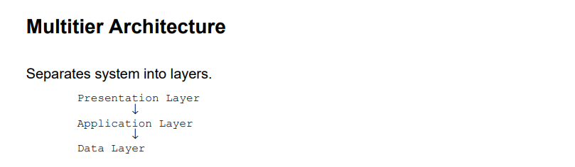

Multitier Architecture
Multitier architecture is a client-server architecture in which the application is divided into multiple layers or tiers, each with a specific role and responsibility.

Layers of Multitier Architecture:
- Presentation Layer: The user interface layer that interacts with the end-users. It is responsible for displaying data and capturing user input.
- Application Layer: The business logic layer that processes the data and implements the core functionality of the application. It acts as an intermediary between the presentation layer and the data layer.
- Data Layer: The database layer that manages data storage and retrieval. It interacts with the application layer to provide access to the underlying database.